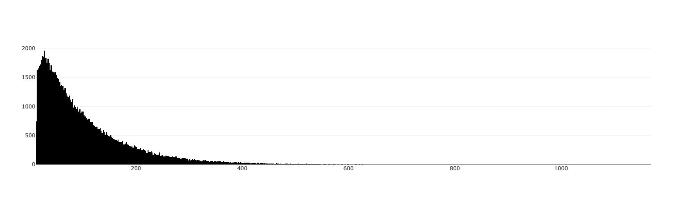
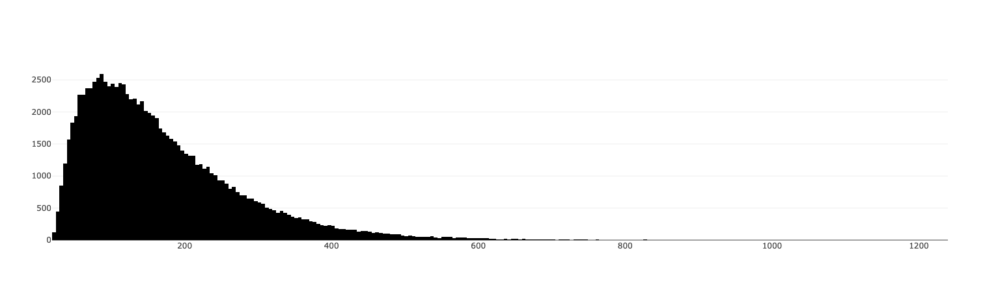
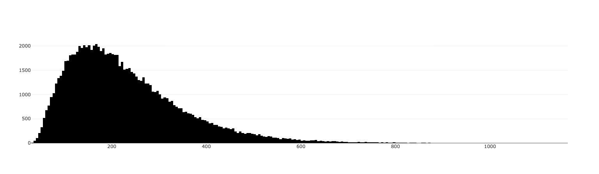
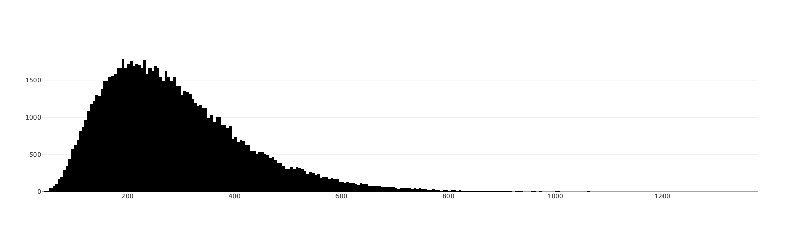

Uno Games very likely follow a poisson distribution. The distribution of number of itereations required to complete the game shifts to the right as the number of players increase.
For a 2 person game, most of the games tend to get over around 20-30 iteration. Here an iteration refers to a single play by a single player. Even a skip for a player is counted as an iteration for the player. 
As the number of people involved in the game increases, the distribution slowly shifts towards the right. As can be seen for the 3 person game, it takes around 80-90 iterations to complete the game.  It's worth noting that in games with more than 2 people the definition of game completion is everyone winning the game (Except the last person ofc)
By 4 or 5 people the number of itereations increases to around 150 and 200 respectively.  
You can try out the simulation yourself below. Note that the strategy adopted by the players is fairly
rudimentary, which you can examine yourself by checking out the unminified index.js. The simulation
might still contain bugs, even though I have added a lot of test cases, if you find them do let me know, so that
I can fix them.